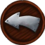

<button class="btn-back" *ngIf="isBackButtonVisible()" (click)="navigateBack()">
    
</button>

<button class="connection-status" [ngClass]="{connected: client.isConnected}">
    <div class="tooltip">{{client.isConnected ? 'connected': 'disconnected'}}</div>
</button>
<router-outlet></router-outlet>
